答卷前，考生务必将自己的姓名、准考证号填写在本试卷和答题卡上。
回答选择题时，选出每小题答案后，用铅笔把答题卡上对应题目的答案标号涂黑。如需改动，用橡皮擦干净后，再选涂其他答案标号。回答非选择题时，将答案写在答题卡上。写在本试卷上无效。
考试结束后，将本试卷和答题卡一并交回。
一、选择题：本题共12小题，每小题2分，共24分。在每小题给出的四个选项中，只有一项是符合题目要求的。
二、选择题：本题共4小题，每小题4分，共16分。在每小题给出的四个选项中，有的只有一项符合题目要求，有的有多项符合题目要求。全部选对的得4分，选对但不全的得2分，有选错的得0分。
三、非选择题：包括必考题和选考题两部分。第17—20题为必考题，每个试题考生都必须作答；共4小题，45分。第21、22题为选考题，共15分，请考生从给出的两道题中任选一题作答。如果多做，则按所做的第一题计分。本册两道选考题均收录，原卷实际计分为100分。
相关题目：第 1 题 · 第 2 题 · 第 3 题 · 第 4 题 · 第 5 题 · 第 6 题 · 第 7 题 · 第 8 题 · 第 9 题 · 第 10 题 · 第 11 题 · 第 12 题 · 第 13 题 · 第 14 题 · 第 15 题 · 第 16 题 · 第 17 题 · 第 18 题 · 第 19 题 · 第 20 题 · 第 21 题 · 第 22 题
返回原卷作答与计分说明
题目与已知条件
胶原蛋白是细胞外基质的主要成分之一，其非必需氨基酸含量比蛋清蛋白高。下列叙述正确的是
A. 胶原蛋白的氮元素主要存在于氨基中
B. 皮肤表面涂抹的胶原蛋白可被直接吸收
C. 胶原蛋白的形成与内质网和高尔基体有关
D. 胶原蛋白比蛋清蛋白的营养价值高
查看原题图／原始配图
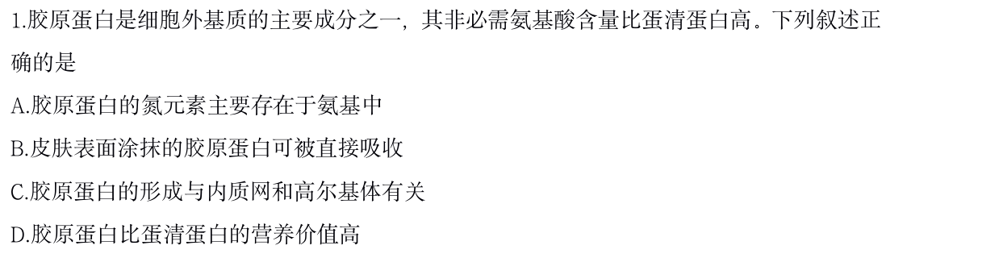
原始配图 1 · 第1题原题图版所用高中知识
蛋白质由氨基酸经肽键连接。分泌到细胞外的蛋白质通常需经内质网、高尔基体加工；营养评价与必需氨基酸组成有关。
读题与思路
肽链氮主要在肽键，整分子胶原不能因外涂就直接吸收，非必需氨基酸高不代表营养更优。胶原为胞外蛋白，形成涉及内质网/高尔基体，选C。
分步解析
- A：多数氮处于肽链的肽键中，而不是游离氨基中。
- B：完整胶原蛋白是大分子，不能据外涂就认为可直接穿过皮肤被吸收利用。
- C：胶原蛋白形成涉及内质网和高尔基体的加工、运输，正确。
- D：必需氨基酸人体不能自身充分合成，非必需氨基酸比例高不构成营养价值更高的证据。
检查与易错点
不要把“组成蛋白质的氨基酸都有氨基”误推为蛋白质的氮仍主要在游离氨基。
本题来源：paper · doc-supplied · web-current-pdf
返回原卷作答与计分说明
题目与已知条件
T2噬菌体侵染大肠杆菌的过程中，下列哪一项不会发生
A. 新的噬菌体DNA合成
B. 新的噬菌体蛋白质外壳合成
C. 噬菌体在自身RNA聚合酶作用下转录出RNA
D. 合成的噬菌体RNA与大肠杆菌的核糖体结合
查看原题图／原始配图
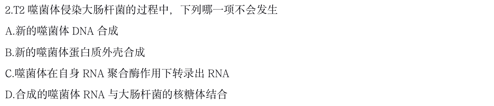
原始配图 1 · 第2题原题图版所用高中知识
T₂噬菌体是DNA病毒，缺乏细胞结构和独立蛋白质合成系统。侵染后利用宿主原料、酶及核糖体复制、表达并装配。
读题与思路
T₂须合成DNA、衣壳，并用宿主核糖体翻译其mRNA；本题转录依靠宿主相关酶，不是自身RNA聚合酶，选C。
分步解析
- A：新噬菌体形成必需先复制噬菌体DNA，发生。
- B：需合成新的衣壳蛋白，发生。
- C：本题T₂不能依靠“自身RNA聚合酶”完成所述转录，使用宿主相关转录装置，故不符合实际过程。
- D：病毒mRNA利用大肠杆菌核糖体翻译，发生。
检查与易错点
病毒复制不是噬菌体细胞分裂；不能因为病毒有自己的DNA就说所有原料和酶也由病毒自带。
本题来源：paper · doc-supplied · web-current-pdf
返回原卷作答与计分说明
题目与已知条件
洗涤剂中的碱性蛋白酶受到其他成分的影响而改变构象，部分解折叠后可被正常碱性蛋白酶特异性识别并降解（自溶）失活。此外，加热也能使碱性蛋白酶失活，如图所示。下列叙述错误的是
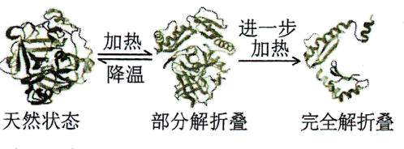
A. 碱性蛋白酶在一定条件下可发生自溶失活
B. 加热导致碱性蛋白酶构象改变是不可逆的
C. 添加酶稳定剂可提高加碱性蛋白酶洗涤剂的去污效果
D. 添加碱性蛋白酶可降低洗涤剂使用量，减少环境污染
查看原题图／原始配图
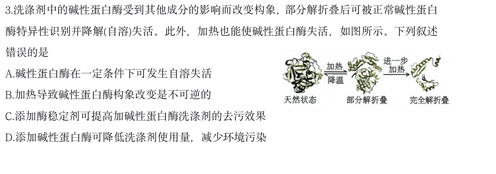
原始配图 1 · 第3题原题图版所用高中知识
蛋白质构象影响酶活性。题图把天然态到部分解折叠画成可逆过程，进一步解折叠才显示不可逆方向。
读题与思路
图示轻度加热的部分解折叠可随降温回天然态，B一概不可逆错误。结构变化可使自溶、稳定剂保护活性、用酶减剂量都有依据。
分步解析
- 部分解折叠暴露可被同种正常酶识别的位点，可发生自溶，A成立。
- 图中轻度加热后降温可由部分解折叠返回天然态，故B把所有加热构象改变都说成不可逆，错误。
- 稳定剂有助于保持结构、降低自溶损失，使有效酶活性持续，C成立。
- 酶高效分解污渍，可降低达到同样洗涤效果所需的洗涤剂用量，D成立。
检查与易错点
不能把图中的“部分解折叠”与“完全解折叠”合并；高温严重变性通常不可逆并不否定本题给出的部分可逆过程。
本题来源：paper · doc-supplied · web-current-pdf
返回原卷作答与计分说明
题目与已知条件
情绪活动受中枢神经系统释放神经递质调控，常伴随内分泌活动的变化。此外，学习和记忆也与某些神经递质的释放有关。下列叙述错误的是
A. 剧痛、恐惧时，人表现为警觉性下降，反应迟钝
B. 边听课边做笔记依赖神经元的活动及神经元之间的联系
C. 突触后膜上受体数量的减少常影响神经递质发挥作用
D. 情绪激动、焦虑时，肾上腺素水平升高，心率加速
查看原题图／原始配图
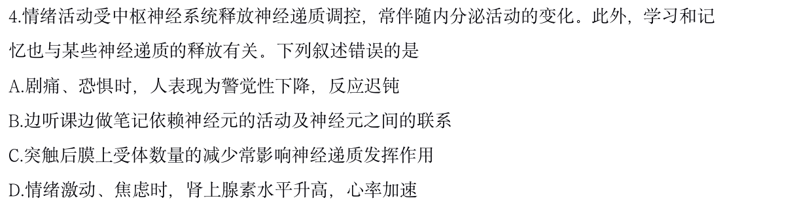
原始配图 1 · 第4题原题图版所用高中知识
神经元之间通过突触建立联系，学习记忆依赖神经活动及联系变化。应激情况下交感活动与肾上腺素分泌可增强。
读题与思路
常规剧痛恐惧应激使警觉提高、反应加快，A反向；神经网络支撑学习，受体数量影响递质效应，焦虑升肾上腺素加快心率。
分步解析
- 剧痛、恐惧通常提高警觉、使机体准备应对危险，A描述方向相反。
- 听课与记笔记是协调的神经活动，依赖神经元及其联系，B正确。
- 受体数减少会影响递质结合和后续信号效应，C正确。
- 情绪激动或焦虑可升高肾上腺素水平，加快心率，D正确。
检查与易错点
本题是一般生理应激模型，不能因个别极端情况下会休克就把A当作通常规律。
本题来源：paper · doc-supplied · web-current-pdf
返回原卷作答与计分说明
题目与已知条件
关于癌症，下列叙述错误的是
A. 成纤维细胞癌变后变成球形，其结构和功能会发生相应改变
B.癌症发生的频率不是很高，大多数癌症的发生是多个基因突变的累积效应
C. 正常细胞生长和分裂失控变成癌细胞，原因是抑癌基因突变成原癌基因
D. 乐观向上的心态、良好的生活习惯，可降低癌症发生的可能性
查看原题图／原始配图
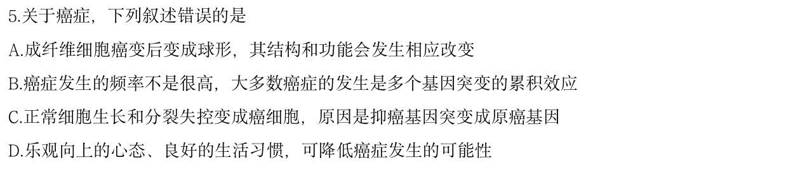
原始配图 1 · 第5题原题图版所用高中知识
原癌基因和抑癌基因原本就是功能不同的基因。癌变常涉及多个相关基因异常，细胞形态、黏着性及增殖行为随之改变。
读题与思路
癌变可以改变形态、通常涉及多基因累积突变，良好习惯降低风险；抑癌基因失活不是变成原癌基因，C错误。
分步解析
- A：成纤维细胞癌变可由扁平梭形趋于球形，结构功能均改变。
- B：癌变是多步事件，常需多个突变积累，符合教材模型。
- C：抑癌基因发生失活不等于“变成原癌基因”；两类基因分别可能异常，故错误。
- D：减少致癌因素暴露、保持良好生活习惯有助降低风险，正确。
检查与易错点
癌变细胞仍含遗传物质并进行基因表达；不要把原癌基因本身视为外来致癌物。
本题来源：paper · doc-supplied · web-current-pdf
返回原卷作答与计分说明
题目与已知条件
洋葱根尖细胞染色体数为8对，细胞周期约12小时。观察洋葱根尖细胞有丝分裂，拍摄照片如图所示。下列分析正确的是
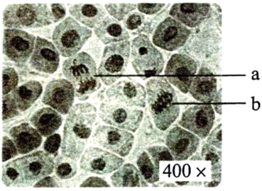
A. a为分裂后期细胞，同源染色体发生分离
B. b为分裂中期细胞，含染色体16条，核DNA分子32个
C. 根据图中中期细胞数的比例，可计算出洋葱根尖细胞分裂中期时长
D. 根尖培养过程中用DNA合成抑制剂处理，分裂间期细胞所占比例降低
查看原题图／原始配图
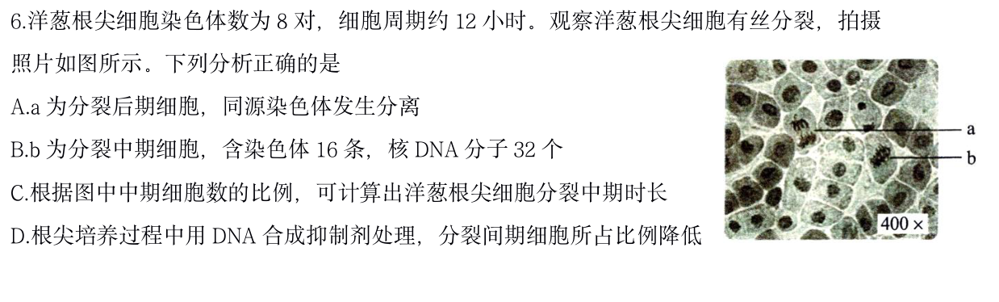
原始配图 1 · 第6题原题图版所用高中知识
2n=16的细胞复制后中期仍为16条染色体，每条有两条姐妹染色单体，共32个核DNA。后期分离的是姐妹染色单体。
读题与思路
有丝分裂后期分开的是姐妹染色单体而非同源染色体；中期16条染色体/32核DNA，B成立。单张小视野不足代表总体周期，抑DNA合成通常使间期比例增加。
分步解析
- A：有丝分裂后期着丝粒分裂、姐妹染色单体分开，不是同源染色体成对分离。
- B：b为中期，染色体16、核DNA32，正确。
- C：单一小视野随机误差大，不能凭照片中少数细胞比例可靠计算中期时长。
- D：DNA合成被抑制，细胞停留在间期的比例通常增加，不是减少。
检查与易错点
“8对”即16条，不是8条。中期DNA加倍不意味着染色体数也加倍。
本题来源：paper · doc-supplied · web-current-pdf
返回原卷作答与计分说明
题目与已知条件
“清明时节雨纷纷，路上行人欲断魂。借问酒家何处有，牧童遥指杏花村。”徜徉古诗意境，思考科学问题。下列观点错误的是
A. 纷纷细雨能为杏树开花提供必需的水分
B. 杏树开花体现了植物生长发育的季节周期性
C. 花开花落与细胞生长和细胞凋亡相关联
D. “杏花村酒”的酿制，酵母菌只进行无氧呼吸
查看原题图／原始配图
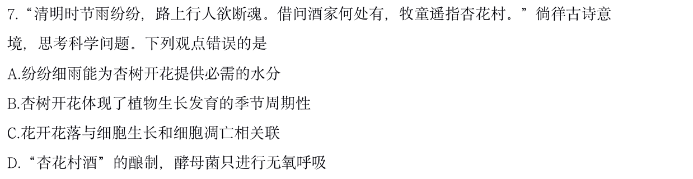
原始配图 1 · 第7题原题图版所用高中知识
水分是生长发育条件，季节性开花受光周期等环境信号调控。花器官形成、衰老与脱落涉及生长和程序性细胞死亡。
读题与思路
雨水、花期及花开花落均可联系水分、季节、细胞生长凋亡。酵母酿酒流程兼有前期有氧繁殖与后期无氧发酵，不是只无氧，D错误。
分步解析
- 雨水可提供开花等过程所需水分，A正确。
- 特定季节开花反映植物生长发育与季节环境相适应，B正确。
- 花开花落可关联细胞生长及凋亡，C正确。
- 酿酒通常先通气使酵母菌繁殖，再缺氧生产酒精；并非整个过程只无氧呼吸，D错误。
检查与易错点
酵母菌不是专性厌氧菌；同一生产流程的不同阶段可利用不同呼吸方式。
本题来源：paper · doc-supplied · web-current-pdf
返回原卷作答与计分说明
题目与已知条件
稻-蟹共作是以水稻为主体、适量放养蟹的生态种养模式，常使用灯光诱虫杀虫。水稻为蟹提供遮蔽场所和氧气，蟹能摄食害虫、虫卵和杂草，其粪便可作为水稻的肥料。下列叙述正确的是
A. 该种养模式提高了营养级间的能量传递效率
B. 采用灯光诱虫杀虫利用了物理信息的传递
C. 硬壳蟹（非蜕壳）摄食软壳蟹（蜕壳）为捕食关系
D. 该种养模式可实现物质和能量的循环利用
查看原题图／原始配图
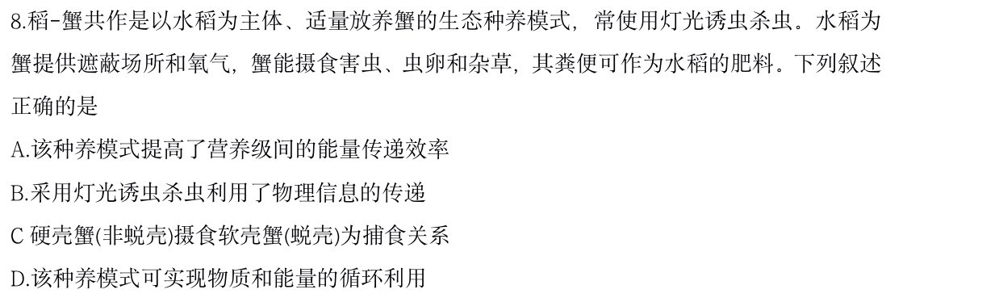
原始配图 1 · 第8题原题图版所用高中知识
生态农业可提高资源利用率，但能量仍单向流动并逐级递减。物理信息包括光、声音、温度等；捕食是不同物种之间的关系。
读题与思路
灯光为物理信息，B成立。生态共作不直接证明提高级间传递率，同种蟹互食不属种间捕食，能量不循环，余项错误。
分步解析
- A：共作有助充分利用物质和能量，但不能无依据说改变营养级间传递效率。
- B：灯光属于物理信息，利用昆虫对光的反应杀虫，正确。
- C：同种蟹之间的取食不是高中生态学所指的种间捕食关系。
- D：物质可以循环，能量不能循环利用。
检查与易错点
农田外源有机物再利用不等于能量循环；“提高效益”也不自动等于“提高能量传递效率”。
本题来源：paper · doc-supplied · web-current-pdf
返回原卷作答与计分说明
题目与已知条件
大鼠控制黑眼/红眼的基因和控制黑毛/白化的基因位于同一条染色体上。某个体测交后代表现型及比例为黑眼黑毛:黑眼白化:红眼黑毛:红眼白化=1:1:1:1。该个体最可能发生了下列哪种染色体结构变异
查看原题图／原始配图
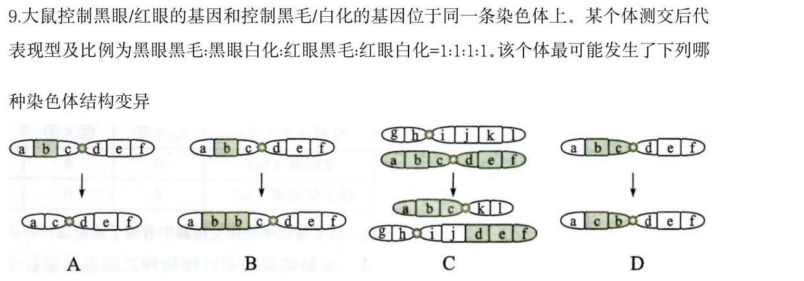
原始配图 1 · 第9题原题图版所用高中知识
染色体结构变异包括缺失、重复、倒位、易位。原来连锁的基因若因易位分处非同源染色体，可在减数分裂中独立分配。
读题与思路
四种结构改变分别缺失、重复、易位、倒位；只有C的非同源易位最能把原连锁基因分开，使测交四类等比例。不能把它称为同源染色单体交换。
分步解析
- A为缺失，少一段；B为重复，多一段；D为倒位，区段次序颠倒。
- C表示非同源染色体交换片段，即易位，可能把原先同一染色体上的两基因分开。
- 分开后两对等位基因独立分配，四类配子等量，与隐性个体测交即形成四类后代各1/4。
检查与易错点
不要把非同源染色体易位称为减数分裂中同源染色体非姐妹染色单体交叉互换。题目问“最可能”，判断以给出的四种结构变化为范围。
本题来源：paper · doc-supplied · web-current-pdf
返回原卷作答与计分说明
题目与已知条件
原生质体（细胞除细胞壁以外的部分）表面积大小的变化可作为质壁分离实验的检测指标。用葡萄糖基本培养基和NaCl溶液交替处理某假单孢菌，其原生质体表面积的测定结果如图所示。下列叙述错误的是
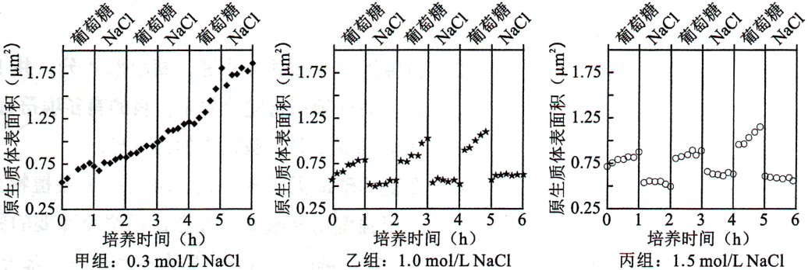
A. 甲组NaCl处理不能引起细胞发生质壁分离，表明细胞中NaCl浓度≥0.3mol/L
B.乙、丙组NaCl处理皆使细胞质壁分离，处理解除后细胞即可发生质壁分离复原
C. 该菌的正常生长和吸水都可导致原生质体表面积增加
D. 若将该菌先65℃水浴灭活后，再用NaCl溶液处理，原生质体表面积无变化
查看原题图／原始配图
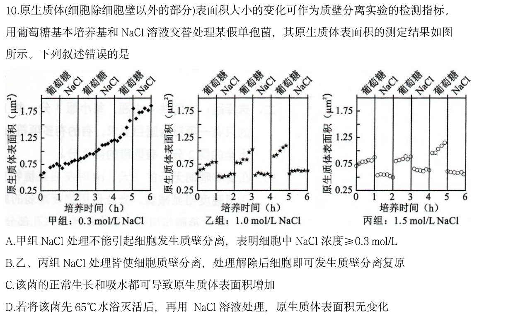
原始配图 1 · 第10题原题图版所用高中知识
具有细胞壁和选择透过性膜的细胞可发生质壁分离；细胞内渗透压由各种溶质共同决定。原生质体表面积还受生长影响。
读题与思路
渗透压由胞内全部溶质贡献，0.3mol/L NaCl不能引起分离不等于胞内NaCl≥0.3，A错误。乙丙反复加盐后收缩、换液后增大，支持渗透分离复原；死细胞不具原来的调节响应。
分步解析
- 甲在0.3 mol/L NaCl中未缩小，只能说明该外液不足以引起明显失水分离；不能推出胞内NaCl本身浓度≥0.3 mol/L，A错误。
- 乙丙加盐后表面积降低，恢复基本培养基后增大，符合质壁分离及复原。
- 吸水会使原生质体变大，正常生长也会增加其面积，C正确。
- 灭活后膜失去维持正常渗透调节的功能，按题设实验模型不再产生原来那种面积响应，D正确。
检查与易错点
原生质体并不是“原生质层”；本题已定义为除细胞壁外全部部分。原核细胞没有大液泡也可有渗透响应。
本题来源：paper · doc-supplied · web-current-pdf
返回原卷作答与计分说明
题目与已知条件
病原体入侵引起机体免疫应答，释放免疫活性物质。过度免疫应答造成机体炎症损伤，机体可通过一系列反应来降低损伤，如图所示。下列叙述错误的是
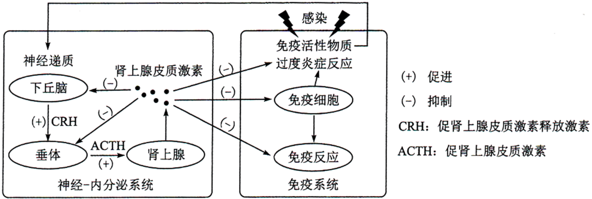
A. 免疫活性物质可与相应受体结合，从而调节神经-内分泌系统功能
B. 适度使用肾上腺皮质激素可缓解某些病原体引起的过度炎症反应
C. 过度炎症反应引起的免疫抑制会增加机体肿瘤发生风险
D. 图中神经递质与肾上腺皮质激素对下丘脑分泌CRH有协同促进作用
查看原题图／原始配图
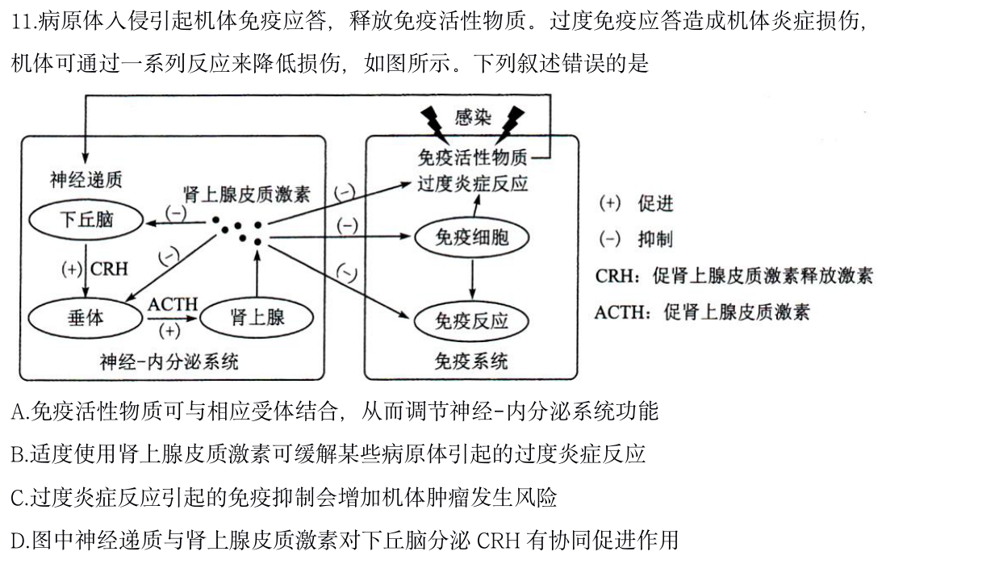
原始配图 1 · 第11题原题图版所用高中知识
内环境稳态由多种调节网络共同维持。激素、递质及免疫活性物质都可作信息分子；过度免疫需受到抑制。
读题与思路
图中皮质激素对下丘脑为负反馈抑制，不能与递质共同促进CRH，D错。免疫信号可经受体调内分泌；免疫抑制减少炎症也降低肿瘤监视。
分步解析
- 免疫活性物质可以影响神经内分泌系统，需相应受体识别，A正确。
- 肾上腺皮质激素抑制过度炎症和免疫细胞反应，适度应用可缓解过度炎症，B符合题意。
- 免疫抑制削弱免疫监视，可能增加肿瘤发生风险，C正确。
- 图中递质促进下丘脑活动，而肾上腺皮质激素负反馈抑制CRH分泌，两者不是协同促进，D错误。
检查与易错点
不要将肾上腺皮质激素与肾上腺素混为一谈；本题考调节机制，不提供临床用药方案。
本题来源：paper · doc-supplied · web-current-pdf
返回原卷作答与计分说明
题目与已知条件
稻蝗属的三个近缘物种①日本稻蝗、②中华稻蝗台湾亚种和③小翅稻蝗中，①与②、①与③的分布区域有重叠，②与③的分布区域不重叠。为探究它们之间的生殖隔离机制，进行了种间交配实验，结果如表所示。下列叙述错误的是
| 交配（♀×♂） | ①×② | ②×① | ①×③ | ③×① | ②×③ | ③×② |
| 交配率（%） | 0 | 8 | 16 | 2 | 46 | 18 |
| 精子传送率（%） | 0 | 0 | 0 | 0 | 100 | 100 |
注:精子传送率是指受精囊中有精子的雌虫占确认交配雌虫的百分比
A. 实验结果表明近缘物种之间也可进行交配
B. 生殖隔离与物种的分布区域是否重叠无关
C. 隔离是物种形成的必要条件
D. ②和③之间可进行基因交流
查看原题图／原始配图
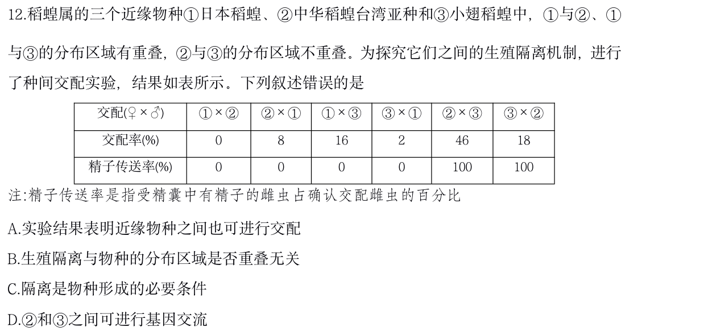
原始配图 1 · 第12题原题图版所用高中知识
不同物种之间的生殖隔离可发生在交配、受精、胚胎发育或后代育性等多个环节。精子进入受精囊并不等于产生可育后代。
读题与思路
存在交配不等于已受精并产生可育后代；②③精子传递率100%不足证明基因交流，D错。重叠分布的物种亦可隔离，地理分布不是是否存在生殖隔离的唯一标准。
分步解析
- 多种组合交配率大于0，近缘物种可以交配，A成立。
- 分布重叠并不自动消除生殖隔离，不重叠也不是生殖隔离的唯一原因，B符合本题模型。
- 生殖隔离是新物种形成的标志，隔离在物种形成中必要，C正确。
- ②③有精子传送，但仍为两个物种，没有受精及可育后代证据，不能认定有基因交流，D错误。
检查与易错点
地理隔离不等于生殖隔离；精子传送率100%也不等于受精率、孵化率或后代可育率100%。
本题来源：paper · doc-supplied · web-current-pdf
返回原卷作答与计分说明
题目与已知条件
在夏季晴朗无云的白天，10时左右某植物光合作用强度达到峰值，12时左右光合作用强度明显减弱。光合作用强度减弱的原因可能是
A.叶片蒸腾作用强，失水过多使气孔部分关闭，进入体内的CO2量减少
B.光合酶活性降低，呼吸酶不受影响，呼吸释放的CO2量大于光合固定的CO2量
C. 叶绿体内膜上的部分光合色素被光破坏，吸收和传递光能的效率降低
D. 光反应产物积累，产生反馈抑制，叶片转化光能的能力下降
查看原题图／原始配图
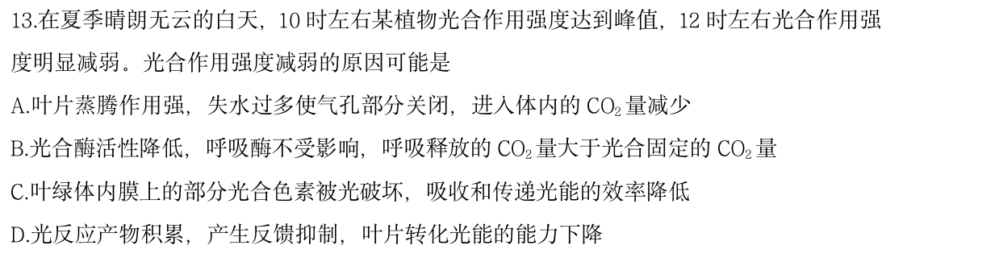
原始配图 1 · 第13题原题图版所用高中知识
高温强光可使蒸腾加剧、气孔关闭，CO₂供应下降；暗反应受限可反馈影响光反应。光合色素位于类囊体膜。
读题与思路
A的气孔关闭减CO₂、D的光反应产物反馈均可降低光合。B无依据把呼吸说成不受影响且超过光合，C色素错误放在内膜，故AD。
分步解析
- A：失水促进部分气孔关闭，CO₂进入减少，可使光合作用下降。
- B：不能据光合午休断言呼吸酶完全不受影响，更不能断言呼吸释CO₂已超过光合固定量。
- C：光合色素在类囊体膜，不在叶绿体内膜，位置错误。
- D：暗反应消耗光反应产物减少，可使产物积累、电子受体等再生不足，反馈抑制光能转化，可能成立。
检查与易错点
光合色素分布在类囊体薄膜上，不在叶绿体内膜上；午休现象的主要原因是气孔部分关闭使CO₂供应不足。
本题来源：paper · reference · doc-supplied · web-current-pdf
返回原卷作答与计分说明
题目与已知条件
大肠杆菌核糖体蛋白与rRNA分子亲和力较强，二者组装成核糖体。当细胞中缺乏足够的rRNA分子时，核糖体蛋白可通过结合到自身mRNA分子上的核糖体结合位点而产生翻译抑制。下列叙述错误的是
A.一个核糖体蛋白的mRNA分子上可相继结合多个核糖体，同时合成多条肽链
B. 细胞中有足够的rRNA分子时，核糖体蛋白通常不会结合自身mRNA分子
C.核糖体蛋白对自身mRNA翻译的抑制维持了RNA和核糖体蛋白数量上的平衡
D. 编码该核糖体蛋白的基因转录完成后，mRNA才能与核糖体结合进行翻译
查看原题图／原始配图
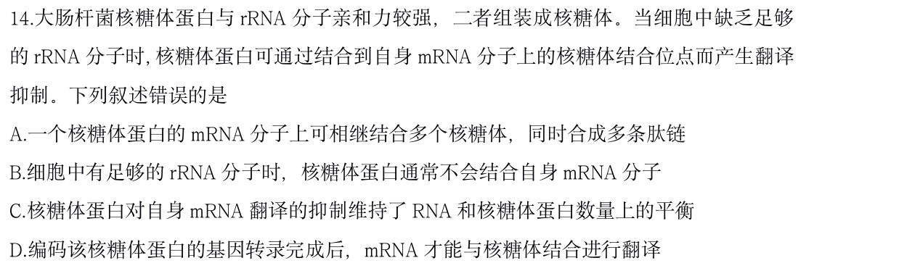
原始配图 1 · 第14题原题图版所用高中知识
原核细胞无核膜，转录和翻译可耦联。核糖体蛋白优先结合rRNA；游离过多时结合自身mRNA，抑制继续合成，形成负反馈。
读题与思路
rRNA优先结合蛋白，不足时游离核糖体蛋白结合自身mRNA抑制翻译，形成负反馈平衡；多聚核糖体可合多链。细菌可边转录边翻译，D必须先完成转录错误。
分步解析
- A：一条mRNA可同时结合多个核糖体，平行合成多条同种肽链，正确。
- B：rRNA充足时蛋白质优先与其组装，较少结合自身mRNA，正确。
- C：蛋白过剩时抑制翻译，避免继续过量，有助数量匹配，正确。
- D：大肠杆菌无核膜分隔，mRNA尚在转录即可与核糖体结合开始翻译，不必等全部转录完成，错误。
检查与易错点
负反馈发生在翻译水平，不是本题所说的抑制基因转录；一条mRNA上的多个核糖体各自合成完整肽链，不是分工拼接一条。
本题来源：paper · reference · doc-supplied · web-current-pdf
返回原卷作答与计分说明
题目与已知条件
果蝇的红眼对白眼为显性，为伴X遗传，灰身与黑身、长翅与截翅各由一对基因控制，显隐性关系及其位于常染色体或X染色体上未知。纯合红眼黑身长翅雌果蝇与白眼灰身截翅雄果蝇杂交，F1相互杂交，F2中体色与翅型的表现型及比例为灰身长翅:灰身截翅:黑身长翅:黑身截翅=9∶3∶3∶1。F2表现型中不可能出现
A. 黑身全为雄性 B. 截翅全为雄性 C. 长翅全为雌性 D. 截翅全为白眼
查看原题图／原始配图
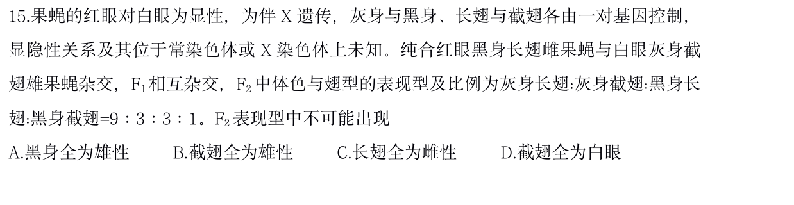
原始配图 1 · 第15题原题图版所用高中知识
9∶3∶3∶1提示灰身与长翅为显性，两性状可独立分配；性别比例正常时仅雌或仅雄的表型最多占总数1/2。
读题与思路
若体色X连锁，黑母×灰父的F₁互交产生1:1体色，违背3:1，故黑身不可能全雄。长翅占3/4也不可能全雌。截翅可X隐性而全雄；与白眼连锁可使截翅全白眼，所以不可能为AC。
分步解析
- F₂灰身∶黑身=3∶1。若黑身位于常染色体，黑身两性均有；若灰身显性且体色X连锁，黑身纯合母本×灰身父本得到杂合女儿和黑身儿子，其再杂交F₂体色为1∶1，不合3∶1。因此体色在常染色体，A“黑身全雄”不可能。
- 长翅占3/4，超过全部雌性的1/2，C“长翅全雌”不可能。
- 若长翅基因在X上，纯合长翅母本×截翅父本，F₁长翅雌雄杂交可使F₂截翅仅见于雄性，B可能。
- 若眼色、翅型在X上完全连锁，F₁雌体X上红眼长翅与白眼截翅两组合分别来自双亲，其截翅儿子可同时为白眼，D也可能。
检查与易错点
题问“不可能出现”，要选择无法构造的情况。9∶3∶3∶1不必然意味着两对基因都在常染色体上。
本题来源：paper · doc-supplied · web-current-pdf
返回原卷作答与计分说明
题目与已知条件
植物受到创伤可诱导植物激素茉莉酸（JA）的合成，JA在伤害部位或运输到未伤害部位被受体感应而产生蛋白酶抑制剂I（PI-Ⅱ），该现象可通过嫁接试验证明。试验涉及突变体m1和m2，其中一个不能合成JA，但能感应JA而产生PI-Ⅱ；另一个能合成JA，但对JA不敏感。嫁接试验的接穗和砧木叶片中PI-Ⅱ的mRNA相对表达量的检测结果如图表所示。
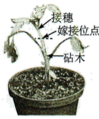
| 嫁接类型 | WT
······
WT | m1
······
m1 | WT
······
m1 | m1
······
WT | m2
······
m2 | WT
······
m2 | m2
······
WT |
| 砧木叶片创伤 | 否 | 是 | 否 | 是 | 否 | 是 | 否 | 是 | 否 | 是 | 否 | 是 | 否 | 是 |
| 接穗叶片 | ++ | +++ | - | - | + | +++ | - | - | - | - | + | + | ++ | +++ |
| 砧木叶片 | ++ | +++ | - | - | - | - | ++ | +++ | - | - | - | - | ++ | +++ |
注:WT为野生型，m1为突变体1，m2为突变体2;“……”代表嫁接，上方为接穗，下方为砧木:“+”“－”分别表示有无，“+”越多表示表达量越高
下列判断或推测正确的是
A. m1不能合成JA，但能感应JA而产生PI-Ⅱ
B. 嫁接也产生轻微伤害，可导致少量表达PI-Ⅱ
C. 嫁接类型m1/m2叶片创伤，m1中大量表达PI-Ⅱ
D. 嫁接类型m2/m1叶片创伤，m2中大量表达PI-Ⅱ
查看原题图／原始配图
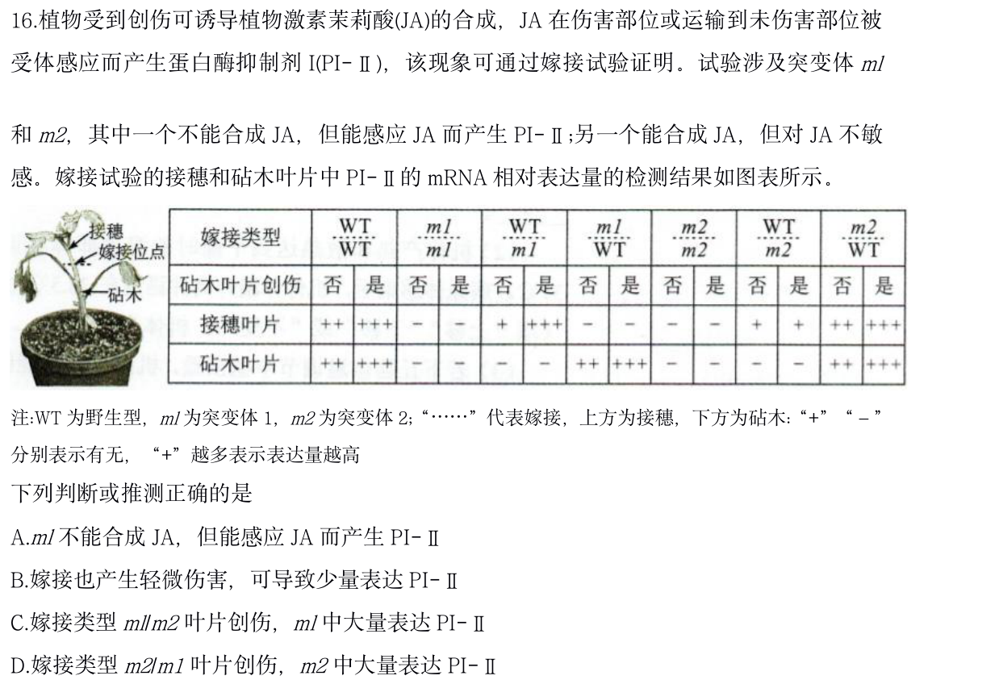
原始配图 1 · 第16题原题图版所用高中知识
激素传递效果取决于合成能力和响应能力。嫁接把受伤产生信号的砧木与接收信号的接穗分开。
读题与思路
WT/m1伤砧木后WT响应而m1不响应，m1能产JA但不敏感；m2/WT中m2响应说明m2能感受但不产。嫁接本身轻伤解释本底；m2/m1伤后m1供JA使m2响应，故BD。
分步解析
- WT/m1砧木受伤后WT接穗大量表达，而m1不表达，说明m1可产生并输出JA，却不能正常感受。A错误。
- m2/WT中m2接穗可受WT砧木伤害信号诱导大量表达，说明m2可感受；WT/m2中伤害m2砧木不能增强接穗表达，说明m2不能合成JA。
- 未额外创伤的WT/WT仍有少量表达，说明嫁接操作本身造成轻伤，B正确。
- m1/m2中m1不敏感，不能大量表达，C错误。m2/m1中m1受伤可合成JA并输送到m2，m2大量表达，D正确。
检查与易错点
符号顺序为接穗/砧木，表中“创伤”专指砧木叶片；方向看反会把两个突变体功能完全颠倒。
本题来源：paper · doc-supplied · web-current-pdf
返回原卷作答与计分说明
题目与已知条件
（12分）将纯净水洗净的河沙倒入洁净的玻璃缸中制成沙床，作为种子萌发和植株生长的基质。某水稻品种在光照强度为8～10μmol/（s·m2）时，固定的CO2量等于呼吸作用释放的CO2量;日照时长短于12小时才能开花。将新采收并解除休眠的该水稻种子表面消毒，浸种1天后，播种于沙床上。将沙床置于人工气候室中，保湿透气，昼/夜温为35℃/25℃，光照强度为2μmol/（s·m2），每天光照时长为14小时。回答下列问题:
（1）在此条件下，该水稻种子____（填“能”或“不能”）萌发并成苗（以株高≥2厘米，至少1片绿叶视为成苗），理由是________。
（2）若将该水稻适龄秧苗栽植于上述沙床上，光照强度为10μmol/（s·m2），其他条件与上述实验相同，该水稻___（填“能”或“不能”）繁育出新的种子，理由是________（答出两点即可）。
（3）若该水稻种子用于稻田直播（即将种子直接撒播于农田），为防鸟害、鼠害减少杂草生长，须灌水覆盖，该种子应具有________特性。
查看原题图／原始配图
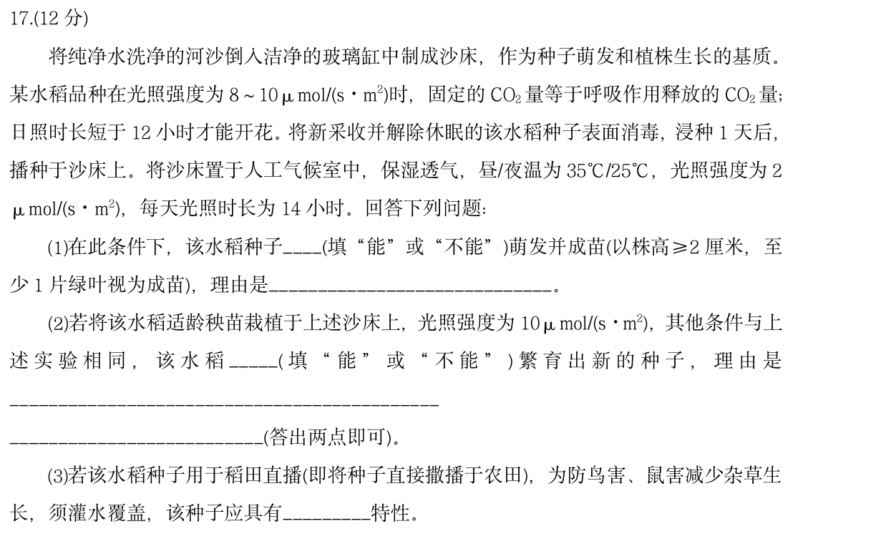
原始配图 1 · 第17题原题图版所用高中知识
萌发早期主要利用种子贮藏物质；光补偿点时净光合为0，夜间仍有呼吸消耗。短日照植物需满足特定光周期才能开花。
读题与思路
种子贮藏有机物可支持萌发和早期成苗，弱光不妨碍题定一叶标准；长期在补偿点附近白天净积累近零而夜耗，且14小时日长违背短于12小时开花条件，不能结实。水覆直播需耐低氧/耐淹萌发。
分步解析
- 种子储存的有机物能供萌发和早期幼苗生长，题设水、温度、氧气适宜且已解除休眠；弱光虽低于补偿点仍可促叶绿素形成，因此能达到题定成苗标准。
- 10 μmol/(s·m²)在题给补偿点范围上限附近，白天净有机物积累约为0，而夜间仍消耗，长期碳收支不足以支持结实。
- 每日光照14 h又超过该品种开花所需的“短于12 h”，不能正常开花；两理由各自构成障碍。
- 灌水覆盖降低氧供应，需要耐淹、耐低氧并能耐受无氧呼吸酒精积累造成的伤害，种子才可正常萌发建成幼苗。
答案
（1）能；种子贮藏物质支持萌发成苗，且其他条件适宜、弱光可促叶绿素形成。（2）不能；全天无足够有机物净积累，且14 h光照不满足短日开花条件。（3）耐低氧、耐淹并耐受酒精毒害的萌发特性。
检查与易错点
不要把“低于光补偿点”误判为种子一开始就无法萌发。沙床缺少持续矿质供给也不利长期生长，但本题优先答可由题干直接推出的两点。
本题来源：paper · doc-supplied · web-current-pdf
返回原卷作答与计分说明
题目与已知条件
（11分）当内外环境变化使体温波动时，皮肤及机体内部的温度感受器将信息传入体温调节中枢，通过产热和散热反应，维持体温相对稳定。回答下列问题:
（1）炎热环境下，机体通过体温调节增加散热。写出皮肤增加散热的两种方式________。
（2）机体产热和散热达到平衡时的温度即体温调定点，生理状态下人体调定点为37℃。病原体感染后，机体体温升高并稳定在38.5℃时，与正常状态相比，调定点____（填“上移”“下移”或“不变”），机体产热_______。
（3）若下丘脑体温调节中枢损毁，机体体温不能维持稳定。已知药物A作用于下丘脑体温调节中枢调控体温。现获得A的结构类似物M，为探究M是否也具有解热作用并通过影响下丘脑体温调节中枢调控体温，将A、M分别用生理盐水溶解后，用发热家兔模型进行了以下实验，请完善实验方案并写出实验结论。
| 分组 | 处理方式 | 结果 |
| 甲 | 发热家兔模型+生理盐水 | 发热 |
| 乙 | 发热家兔模型+A溶液 | 退热 |
| 丙 | 发热家兔模型+M溶液 | 退热 |
| 丁 | ①________ | 发热 |
②由甲、乙、丙三组实验结果，得出结论________。
③由甲、乙、丙、丁四组实验结果，得出结论________。
查看原题图／原始配图
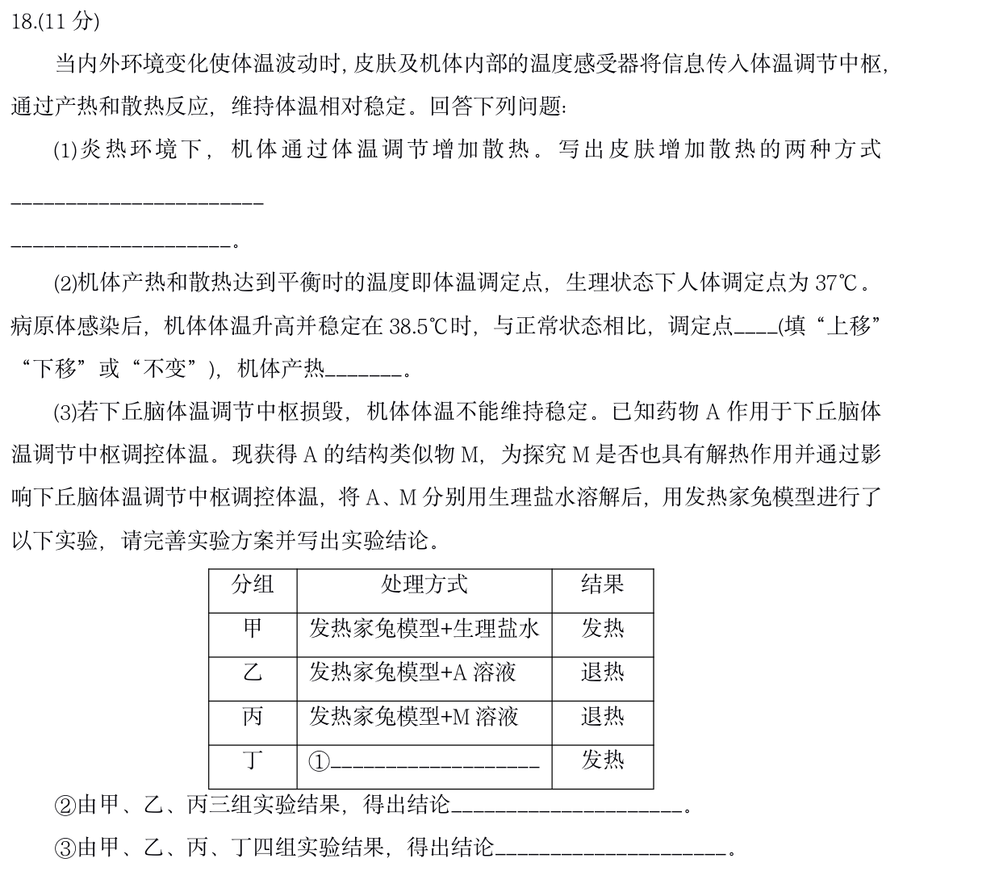
原始配图 1 · 第18题原题图版所用高中知识
下丘脑参与体温调节。体温稳定意味着一定时段产热与散热平衡；发热时调定点可上移。实验需区分“药物有效”与“作用依赖某中枢”。
读题与思路
热时毛细血管舒张、汗液分泌蒸发增散热。稳定高温说明调定点上移，按同环境发热模型产热增加但平台产散相等。丁为损毁下丘脑中枢+M；前三组示M退热，含丁比较示其效果依赖中枢完整。
分步解析
- 炎热时皮肤毛细血管舒张、血流增加，汗腺分泌增加且汗液蒸发，均利于散热。
- 从37℃稳定到38.5℃表示调定点上移；按同环境下题设发热模型，产热较正常增加，但在38.5℃平台期仍须与散热相等。
- 丁组为损毁下丘脑体温调节中枢的发热家兔模型，给予等量适宜剂量M溶液，其余条件一致，结果仍发热。
- 甲不退热、乙丙退热，支持M具有与A相似的解热作用；丙丁比较支持M的解热作用依赖完整的下丘脑体温调节中枢。
答案
（1）皮肤毛细血管舒张、血流量增加；汗液分泌增多并蒸发。（2）上移；增加。（3）①损毁下丘脑体温调节中枢的发热家兔模型＋M溶液；②M也具有解热作用；③M通过影响下丘脑体温调节中枢发挥解热作用。
检查与易错点
平台期不能写“产热大于散热”，那会使体温继续升高。该实验支持作用依赖中枢，不足以证明M和A具有完全相同的分子靶点；这里只解释题目实验，不作治疗建议。
本题来源：paper · reference · doc-supplied · web-current-pdf
返回原卷作答与计分说明
题目与已知条件
（13分）中国是传统的水稻种植大国，有一半以上人口以稻米为主食。在培育水稻优良品种的过程中，发现某野生型水稻叶片绿色由基因C控制。回答下列问题:
（1）突变型1叶片为黄色，由基因C突变为C1所致，基因C1纯合幼苗期致死。突变型1连续自交3代，F3成年植株中黄色叶植株占______。
（2）测序结果表明，突变基因C1转录产物编码序列第727位碱基改变，由5＇-GAGAG-3＇变为5＇-GACAG-3＇，导致第______位氨基酸突变为______，从基因控制性状的角度解释突变体叶片变黄的机理________。（部分密码子及对应氨基酸:GAG谷氨酸;AGA精氨酸;GAC天冬氨酸;ACA苏氨酸;CAG谷氨酰胺）
（3）由C突变为C1产生了一个限制酶酶切位点。从突变型1叶片细胞中获取控制叶片颜色的基因片段，用限制酶处理后进行电泳（电泳条带表示特定长度的DNA片段），其结果为图中___（填“I”“Ⅱ”或“Ⅲ”）。
（4）突变型2叶片为黄色，由基因C的另一突变基因C2所致。用突变型2与突变型1杂交，子代中黄色叶植株与绿色叶植株各占50%。能否确定C2是显性突变还是隐性突变?______（填“能”或“否”），用文字说明理由________。
查看原题图／原始配图
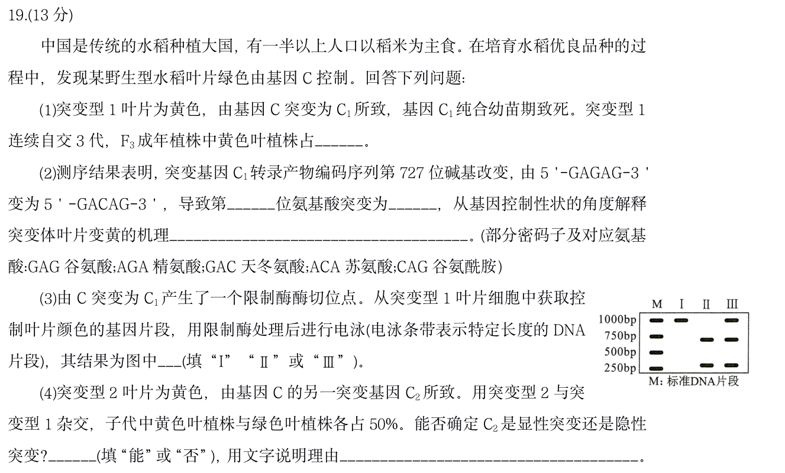
原始配图 1 · 第19题原题图版所用高中知识
显性黄叶杂合子CC₁能存活，C₁C₁幼苗致死。连续自交须每代剔除致死者再归一化；编码区每3个碱基对应一个密码子。
读题与思路
每代杂合自交AA致死并淘汰，成株杂合比依次2/3、2/5、2/9。727=3×242+1，突变改变243位密码子成CAG谷氨酰胺。杂合酶切有1000/750/250三带Ⅲ。完全显隐模型下唯C₂隐性纯合×CC₁给绿黄1:1，故可判隐性。
分步解析
- P为CC₁。F₁成株CC∶CC₁=1∶2。其等量自交，F₂未淘汰前CC=(1/3)+(2/3)(1/4)=1/2，CC₁=(2/3)(1/2)=1/3，致死1/6；成株为3∶2。
- F₂成株中CC=3/5、CC₁=2/5。F₃未淘汰前CC=3/5+1/10=7/10，CC₁=1/5，致死1/10；黄色占(1/5)/(9/10)=2/9。
- 727=3×242+1，故改变第243个密码子的第一位。局部原序列的第727—729位为GAG，突变后为CAG，编码谷氨酰胺。影响色素合成相关酶结构功能，改变代谢导致黄叶。
- CC₁含未切开的正常片段1000 bp，以及突变片段切出的750、250 bp，出现三带，选Ⅲ。
- 按本题通常完全显隐性模型，若C₂隐性，C₂C₂×CC₁得到CC₂绿与C₁C₂黄各1/2；若C₂显性，CC₂×CC₁应为3黄∶1绿，C₂C₂×CC₁应全黄，均不合题给1∶1，故能确定为隐性突变。
答案
（1）2/9。（2）243；谷氨酰胺；突变影响色素形成相关酶的合成或功能，改变色素代谢而黄叶。（3）Ⅲ。（4）能；若C₂为隐性突变，突变型2为C₂C₂，与突变型1（CC₁）杂交，子代CC₂（绿）∶C₁C₂（黄）=1∶1，与结果相符；若C₂为显性突变，突变型2（CC₂或C₂C₂）与CC₁杂交，子代黄色叶∶绿色叶为3∶1或全为黄色，与结果不符。故C₂为隐性突变。
检查与易错点
727不是把题给5个碱基从头分组；必须对齐整个编码区阅读框。末问要把C₂分别假设为显性和隐性，逐一推出子代比例，再与1∶1对照。
本题来源：paper · reference · doc-supplied · web-current-pdf
返回原卷作答与计分说明
题目与已知条件
（9分）入侵生物福寿螺适应能力强、种群繁殖速度快。为研究福寿螺与本土田螺的种间关系及福寿螺对水质的影响，开展了以下实验:
实验一:在饲养盒中间放置多孔挡板，不允许螺通过，将两种螺分别置于挡板两侧饲养;单独饲养为对照组。结果如图所示。
实验二:在饲养盒中，以新鲜菜叶喂养福寿螺，每天清理菜叶残渣;以清洁自来水为对照组。结果如表所示。
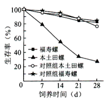
| 养殖天数（d） | 浑浊度（FTU） | 总氮（mg/L） | 总磷（mg/L） |
| 实验组 | 对照组 | 实验组 | 对照组 | 实验组 | 对照组 |
| 1 | 10.81 | 0.58 | 14.72 | 7.73 | 0.44 | 0.01 |
| 3 | 15.54 | 0.31 | 33.16 | 8.37 | 1.27 | 0.01 |
| 5 | 23.12 | 1.04 | 72.78 | 9.04 | 2.38 | 0.02 |
| 7 | 34.44 | 0.46 | 74.02 | 9.35 | 4.12 | 0.01 |
注：水体浑浊度高表示其杂质含量高
回答下列问题:
（1）野外调查本土田螺的种群密度，通常采用的调查方法是________。
（2）由实验一结果可知，两种螺的种间关系为________。
（3）由实验二结果可知，福寿螺对水体的影响结果表现为________。
（4）结合实验一和实验二的结果，下列分析正确的是_______（填序号）。
①福寿螺的入侵会降低本土物种丰富度②福寿螺对富营养化水体耐受能力低③福寿螺比本土田螺对环境的适应能力更强④种群数量达到K/2时，是防治福寿螺的最佳时期
（5）福寿螺入侵所带来的危害警示我们，引种时要注意________（答出两点即可）。
查看原题图／原始配图
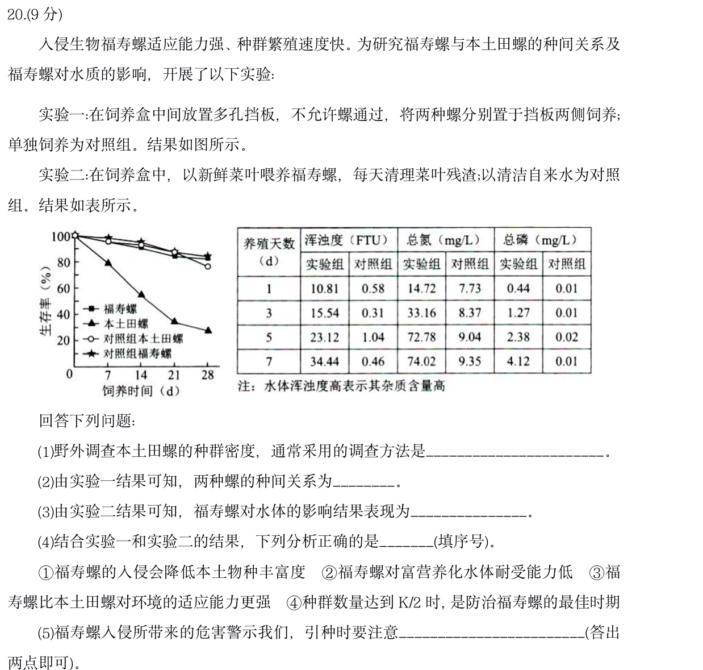
原始配图 1 · 第20题原题图版所用高中知识
活动范围小、移动较慢的动物可用样方法。竞争可通过共享环境资源或改变环境间接发生；水中总氮、总磷升高反映富营养化风险。
读题与思路
田螺活动小宜样方，混养田螺存活降而福寿螺变化小，支持优势竞争。浑浊度、氮、磷均升说明富营养化；①③成立，防治不能等到K/2最快增殖时才开始。引种须评估扩散、天敌及本土生态风险。
分步解析
- 本土田螺活动范围小，采用随机样方计数估算种群密度。
- 共同水环境中本土田螺生存率明显下降，福寿螺基本接近其单养对照，支持福寿螺占优势的种间竞争。
- 实验组水体浑浊度、总氮、总磷均明显高于对照并随时间增加，表明水质恶化、富营养化。
- ①入侵可排挤本土物种、降低丰富度；③福寿螺适应能力较强，正确。②与其能在劣化水体中保持较高生存率不符。④K/2附近增长速率高，应尽早防治而非等待此时。
- 引种前调查当地生态适应性、繁殖扩散潜力、天敌及对本土生物的影响；进行隔离试验、检疫与风险评估。
答案
（1）样方法。（2）种间竞争。（3）浑浊度和氮磷含量升高，水体富营养化，水质恶化。（4）①③。（5）评估适应性、繁殖扩散能力；调查天敌与对本土物种的影响等（答两点）。
检查与易错点
有挡板仍可发生间接竞争，不能因“不接触”便否定竞争。物种丰富度指物种数，不等于个体总数。
本题来源：paper · doc-supplied · web-current-pdf
返回原卷作答与计分说明
题目与已知条件
[选修1：生物技术实践]（15分）黄酒源于中国，与啤酒、葡萄酒并称世界三大发酵酒。发酵酒的酿造过程中除了产生乙醇外，也产生不利于人体健康的氨基甲酸乙酯（EC）。EC主要由尿素与乙醇反应形成，各国对酒中的EC含量有严格的限量标准。回答下列问题:
（1）某黄酒酿制工艺流程如图所示，图中加入的菌种a是_______，工艺b是_______（填“消毒”或“灭菌”），采用工艺b的目的是________。
（2）以尿素为唯一氮源的培养基中加入________指示剂，根据颜色变化，可以初步鉴定分解尿素的细菌。尿素分解菌产生的脲酶可用于降解黄酒中的尿素，脲酶固定化后稳定性和利用效率提高，固定化方法有________（答出两种即可）。
（3）研究人员利用脲酶基因构建基因工程菌L，在不同条件下分批发酵生产脲酶，结果如图所示。推测________是决定工程菌L高脲酶活力的关键因素，理由是________。
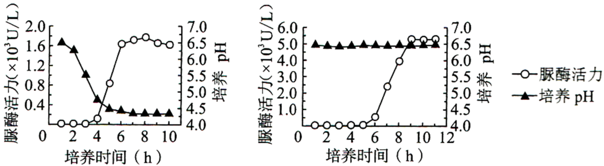
（4）某公司开发了一种新的黄酒产品，发现EC含量超标。简要写出利用微生物降低该黄酒中EC含量的思路________。
查看原题图／原始配图
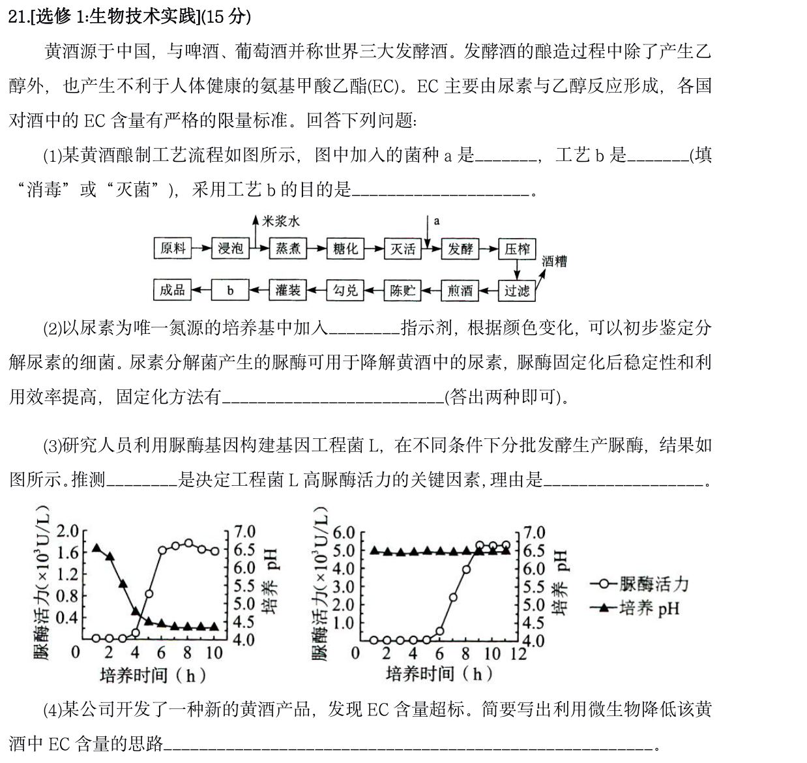
原始配图 1 · 第21题原题图版所用高中知识
酵母菌发酵产生乙醇。脲酶分解尿素释放氨，可使pH升高、酚红变红。固定化酶可重复使用；生产时培养pH会影响工程菌产酶及酶活。
读题与思路
酵母产乙醇；b杀灭污染微生物，但未给具体工艺参数，消毒/灭菌须区分参考口径与严格定义。酚红检尿素分解，酶固定可吸附/化学结合。左图终活力约1.6×10³，右图约5.3×10³且pH恒6.5，培养pH为关键；已成EC应找EC降解菌/酶，脲酶只能除尿素前体。
分步解析
- a为酵母菌，利用糖发酵产生乙醇。b为煎酒（加热处理），属于消毒而非灭菌：目的是杀死酒中的大多数微生物、延长保存期；若采用灭菌所需的高温高压，会破坏酒的成分和风味。
- 用酚红指示pH上升，可初步鉴定尿素分解菌。固定化酶常用化学结合法、物理吸附法；包埋法也是固定化方法，但小酶分子较易泄漏，实际选择应考虑材料。
- 左图pH从约6.5降至约4.5时，终末脲酶活力约1.6×10³ U/L（峰值约1.8×10³ U/L）；右图将pH维持约6.5，终末约5.3×10³ U/L。维持适宜培养pH能获得更高活力，所以pH是关键因素。
- 对已超标产品，可从相关环境筛选能分解EC且适用于食品体系的微生物，复筛验证降解能力及产物安全性，利用菌株或其酶处理并复测EC。生产预防可另筛选产脲酶菌，制成酶制剂在合适环节降解尿素以减少EC后续形成。
答案
（1）酵母菌；消毒；杀死酒中的大多数微生物，防止杂菌污染变质、延长保存期，同时保持黄酒风味。（2）酚红；化学结合法、物理吸附法等。（3）培养pH；pH维持6.5组最终脲酶活力显著高于下降至4.5组。（4）筛选安全有效的EC降解微生物或其酶处理，设对照并检测EC变化；改进发酵时可利用尿素分解菌/脲酶消除前体，减少新增EC。
检查与易错点
两图左纵轴量程不同，不能因曲线形状相似就说活力一样，也不能把右图更高活力解释成“随pH降低活力上升”。脲酶直接作用于尿素，不能据此声称它直接降解已经形成的EC。消毒只杀死大部分微生物，灭菌杀死包括芽孢在内的全部微生物，食品成品通常采用消毒以保持品质。
本题来源：paper · reference · variant · doc-supplied · web-current-pdf
返回原卷作答与计分说明
题目与已知条件
[选修3：现代生物科技专题]（15分）水蛭是我国的传统中药材，主要药理成分水蛭素为水蛭蛋白中重要成分之一，具有良好的抗凝血作用。拟通过蛋白质工程改造水蛭素结构，提高其抗凝血活性。回答下列问题:
（1）蛋白质工程流程如图所示，物质a是_______，物质b是_______。在生产过程中，物质b可能不同，合成的蛋白质空间构象却相同，原因是________。
（2）蛋白质工程是基因工程的延伸，基因工程中获取目的基因的常用方法有________、________和利用PCR 技术扩增。PCR 技术遵循的基本原理是________。
（3）将提取的水蛭蛋白经甲、乙两种蛋白酶水解后，分析水解产物中的肽含量及其抗凝血活性，结果如图所示。推测两种处理后酶解产物的抗凝血活性差异主要与肽的______（填“种类”或“含量”）有关，导致其活性不同的原因是________。
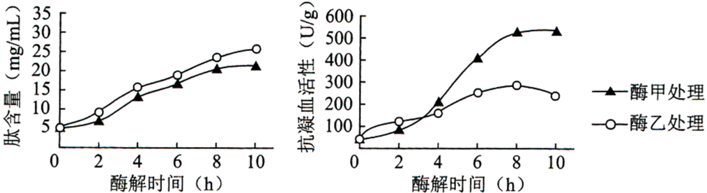
（4）若要比较蛋白质工程改造后的水蛭素、上述水蛭蛋白酶解产物和天然水蛭素的抗凝血活性差异，简要写出实验设计思路________。
查看原题图／原始配图
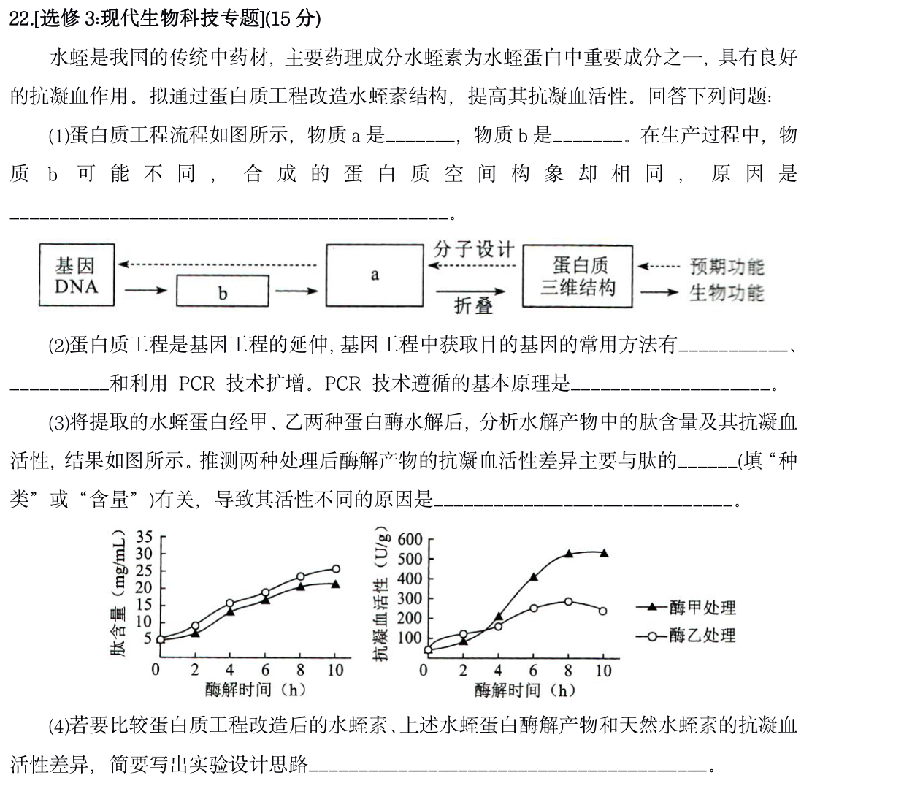
原始配图 1 · 第22题原题图版所用高中知识
蛋白质工程从预期功能出发，设计结构与氨基酸序列，再改造基因。密码子简并使不同mRNA可能编码同一氨基酸序列。
读题与思路
a为多肽、b为mRNA，密码简并使不同mRNA可得相同蛋白。目的基因可文库/人工合成，PCR模仿复制。甲肽含量更少却单位质量活性高，指向肽种类/结构而非总量。各产物分别用等量同源血样、等浓度处理，设天然/溶剂对照，比较凝血时间。
分步解析
- DNA转录得到b=mRNA，mRNA翻译产生a=多肽链（氨基酸序列），再折叠形成空间结构。不同密码子可编码同一种氨基酸，因此不同mRNA可得到同序列、同构象蛋白。
- 目的基因可从基因文库获取或人工合成，也可PCR扩增。PCR按DNA复制的碱基互补配对和半保留复制原理，在体外循环进行变性、复性、延伸。
- 乙酶处理肽总量略高，甲酶处理的单位肽质量抗凝活性却显著更高，说明差异主要在肽的种类和结构，而非含量。不同酶识别切割位点不同，所得肽的长度、序列及结构不同。
- 取同来源、等量且状态一致的血样，随机分组，分别加等量/等蛋白量的改造水蛭素、各相应酶解产物和天然水蛭素，并设等体积溶剂空白对照。控制温度、pH、处理时间等，重复测凝血所需时间；时间越长表示抗凝作用越强。
答案
（1）a为多肽链/氨基酸序列，b为mRNA；密码子具有简并性。（2）从基因文库获取、人工合成；DNA复制。（3）种类；不同蛋白酶切割位点不同，产物肽的序列、长度及结构不同，活性不同。（4）等量各待测样品加入相同血样，设空白与天然水蛭素对照，控制条件并重复测凝血时间比较。
检查与易错点
若酶解产物指甲、乙两种，应分别设组，不要混成一组。抗凝活性图单位为U/g，已按肽量归一；实验为考试设计，不鼓励自行采血或用药。
本题来源：paper · reference · doc-supplied · web-current-pdf
题源与核验说明
- 2022年高考真题——生物（湖南卷） Word版含解析【KS5U 高考】.doc所附参考资料；SHA-256：58e53a74c1320b7a2b6feafb19e32e49272e8befbd3c6ceeae9246349c23dd13
- web-paper.pdf原卷文件；SHA-256：7015180aa435a09798055119455a8cc114a303c23af446c315f5145a0d622310
- 中国教育在线：湖南省2022年生物原题PDF8页湖南生物原卷全部题干、选项、表格和图已对照。
- 自主选拔在线：2022湖南生物参考答案公开参考13/14题编号答案错配，21题把黄酒写成啤酒并误释双纵轴；依题独立重算，不照搬。
- 2022湖南生物公开转载的杀菌术语对照公开检索摘要采用“杀死黄酒中全部的微生物及芽孢、孢子”的灭菌口径；另一所列参考PDF采用消毒。仅用于提示术语差异，不作为官方评分结论。